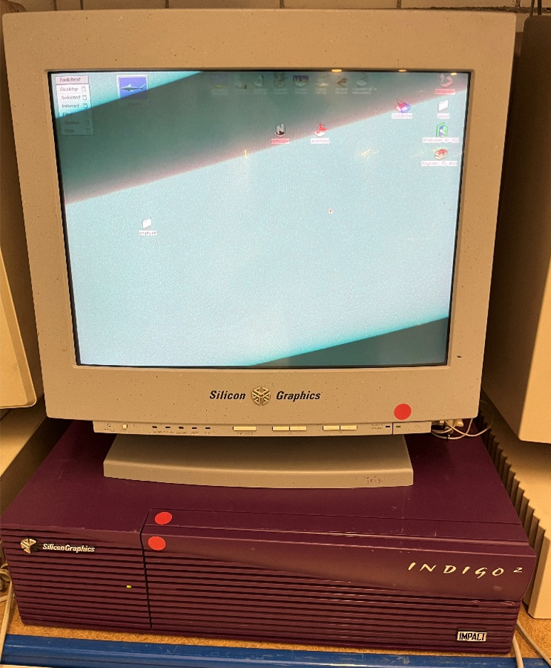

Steckbriefe Unix-Workstations & Server
Home
Sun Workstation
Indigo Workstation
Apollo Workstation/Server
Digital Workstation

Silicon Graphics Indigo 2 Workstation
Basisdaten
Modell:
Silicon Graphics Indigo 2
Baujahr:
1993
Kategorie:
Workstation
Typischer Verwendungszweck
3D-Grafik
Visualisierung
Simulation
Videobearbeitung
Wissenschaft
Filmproduktion
Ablösung durch
Nachfolgemodelle SGI O2
SGI Octane
Besonderheiten
Sehr leistungsstarke UNIX-Workstation
fortgeschrittene 3D-Grafik
Spielte eine wichtige Rolle bei der Entwicklung von 3D-Animationen und Filmproduktionen
Zur späteren Sun Workstation
Zur früheren HP Apollo Workstation